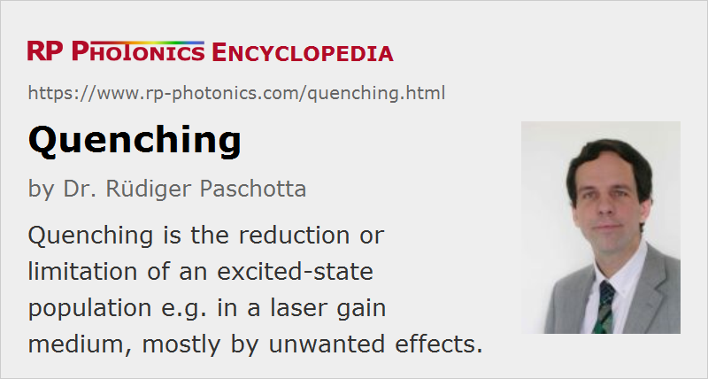

Quenching
Definition: the reduction or limitation of an excited-state population, mostly by unwanted effects
Category: physical foundations
How to cite the article; suggest additional literature
Author: Dr. Rüdiger Paschotta
The term quenching has many different meanings; this article discusses only the context of fluorescence quenching in lasers, particularly solid-state lasers. In rare-earth-doped or transition-metal-doped gain media (laser crystals or glasses), the lifetime of electronic levels of laser-active ions is sometimes strongly reduced. This quenching can have different origins, such as:
- multi-phonon transitions to lower electronic levels
- energy transfer processes between laser-active ions (for high concentrations, and particularly when clustering of ions occurs; this is called concentration quenching or pair-induced quenching) (often associated with upconversion)
- energy transfers to other ions, e.g. present as unwanted impurities, which can be introduced by the raw materials but also during crystal growth e.g. by contamination from the crucible
- energy transfers to color centers, i.e. to defects in the crystal structure
Quenching becomes apparent as a reduction in the decay time and the overall intensity of the fluorescence from quenched electronic states. If the upper laser level for some laser transition is quenched, i.e. the upper-state lifetime is reduced, this can raise the threshold pump power of a laser or reduce the gain of an amplifier. However, quenching processes can also be helpful e.g. when they help to reduce the lower-state lifetime and thus the population of the lower laser level, or to populate the upper laser level via pumping into a higher-lying level. There are lasers for which such quenching processes are essential.
Processes responsible for lifetime quenching often (but not always) create additional fluorescence at other wavelengths. For example, fluorescence may reveal the population of higher-lying levels (→ upconversion fluorescence) or the excitation of other ion species (sometimes present as impurities) via energy transfers. However, it can be difficult to determine whether the observed fluorescence really results from the same process which is responsible for quenching. For example, weak upconversion fluorescence could either be some additional weak effect with negligible influence on the level lifetime, or could indicate strong quenching via upconversion (and be weak only because the quantum efficiency of the upconversion fluorescence is small).
Questions and Comments from Users
Here you can submit questions and comments. As far as they get accepted by the author, they will appear above this paragraph together with the author’s answer. The author will decide on acceptance based on certain criteria. Essentially, the issue must be of sufficiently broad interest.
Please do not enter personal data here; we would otherwise delete it soon. (See also our privacy declaration.) If you wish to receive personal feedback or consultancy from the author, please contact him e.g. via e-mail.
By submitting the information, you give your consent to the potential publication of your inputs on our website according to our rules. (If you later retract your consent, we will delete those inputs.) As your inputs are first reviewed by the author, they may be published with some delay.
Bibliography
| [1] | D. L. Dexter and J. H. Schulman, “Theory of concentration quenching in inorganic phosphors”, J. Chem. Phys. 22 (6), 1063 (1954), doi:10.1063/1.1740265 |
| [2] | K. Arai et al., “Aluminium or phosphorus co-doping effects on the fluorescence and structural properties of neodymium-doped silica glass”, J. Appl. Phys. 59 (10), 3430 (1986), doi:10.1063/1.336810 |
| [3] | R. Wyatt, “Spectroscopy of rare earth doped fibres”, Proc. SPIE 1171, 54 (1989), doi:10.1117/12.963138 |
| [4] | E. Delevaque et al., “Modeling of pair-induced quenching in erbium-doped silicate fibers”, IEEE Photon. Technol. Lett. 5, 73 (1993), doi:10.1109/68.185065 |
| [5] | P. Myslinski et al., “Effects of concentration on the performance of erbium-doped fiber amplifiers”, IEEE J. Lightwave Technol. 15 (1), 112 (1997), doi:10.1109/50.552118 |
| [6] | R. Paschotta, et al., “Lifetime quenching in Yb doped fibers”, Opt. Commun. 136, 375 (1997), doi:10.1016/S0030-4018(96)00720-1 |
| [7] | M. Pollnau and S. D. Jackson, “Energy recycling versus lifetime quenching in erbium-doped 3-μm fiber lasers”, IEEE J. Quantum Electron. 38 (2), 162 (2002), doi:10.1109/3.980268 |
See also: upper-state lifetime, lower-state lifetime, energy transfer, upconversion, fluorescence, clustering, gain media, rare-earth-doped gain media, doping concentration, The Photonics Spotlight 2006-09-06
and other articles in the category physical foundations
|  |
If you like this page, please share the link with your friends and colleagues, e.g. via social media:
These sharing buttons are implemented in a privacy-friendly way!